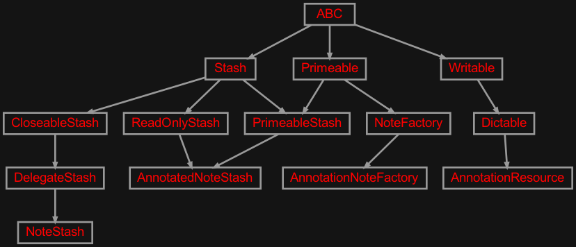
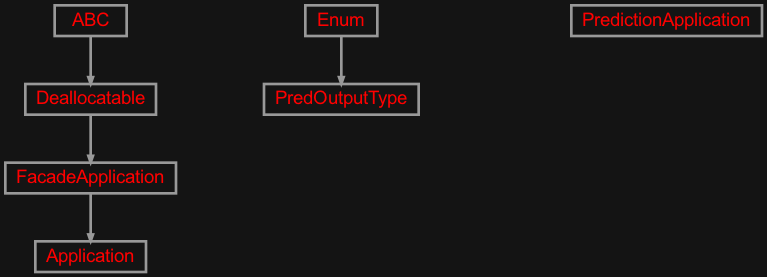
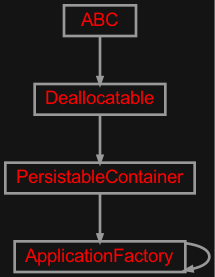
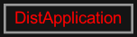
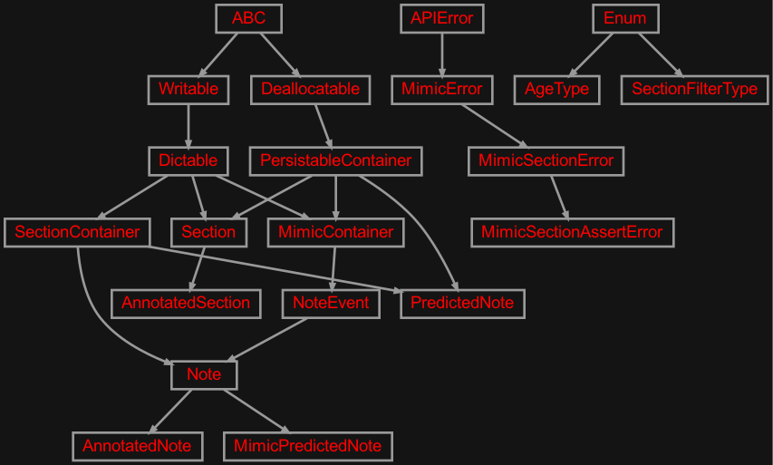
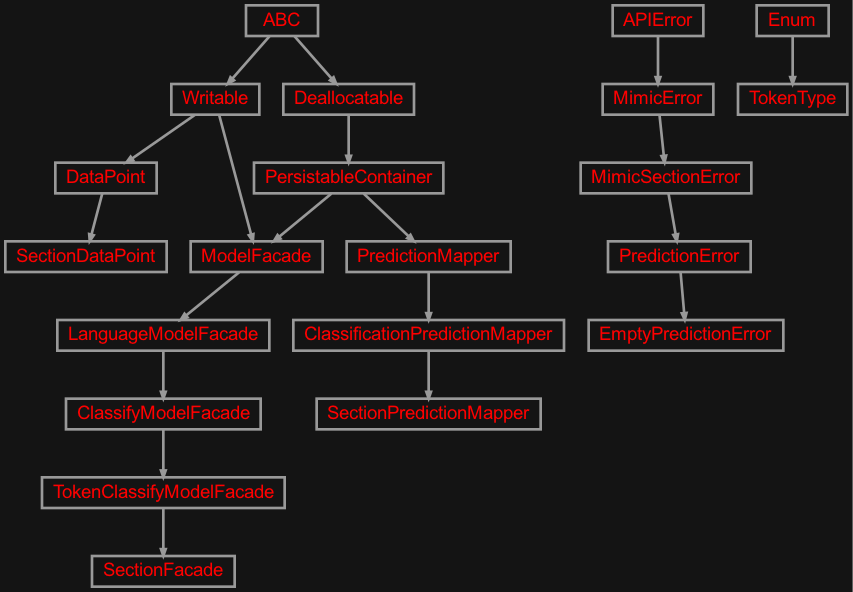
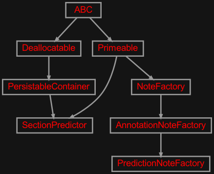

zensols.mimicsid package#
Submodules#
zensols.mimicsid.anon#

Stashes that use annotated sections when available.
- class zensols.mimicsid.anon.AnnotatedNoteStash(corpus, anon_resource, row_hadm_map_path)[source]#
Bases:
ReadOnlyStash,PrimeableStashA stash that returns
Noteinstances by thier uniquerow_idkeys.- __init__(corpus, anon_resource, row_hadm_map_path)#
-
anon_resource:
AnnotationResource# Contains the annotations and ontolgy/metadata note to section data.
- clear()[source]#
Delete all data from the from the stash.
Important: Exercise caution with this method, of course.
- exists(row_id)[source]#
Return
Trueif data with keynameexists.Implementation note: This
Stash.exists()method is very inefficient and should be overriden.- Return type:
- class zensols.mimicsid.anon.AnnotationNoteFactory(config_factory, category_to_note, mimic_default_note_section, anon_resource=None, annotated_note_section=None)[source]#
Bases:
NoteFactoryOverride to replace section with MedSecId annotations if they exist.
- __init__(config_factory, category_to_note, mimic_default_note_section, anon_resource=None, annotated_note_section=None)#
-
annotated_note_section:
str= None# The section to use for creating new annotated section, for those that found in the annotation set.
-
anon_resource:
AnnotationResource= None# Contains the annotations and ontolgy/metadata note to section data.
- class zensols.mimicsid.anon.AnnotationResource(installer)[source]#
Bases:
DictableThis class providess access to the
.zipfile that contains the JSON section identification annotations. It also has the ontology provided as a Pandas dataframe.- __init__(installer)#
-
installer:
Installer# Used to download the annotation set as a zip file and provide the location to the downloaded file.
- class zensols.mimicsid.anon.NoteStash(delegate, corpus)[source]#
Bases:
DelegateStashCreates notes of type
NoteorAnnotatedNotedepending on if the note was annotated.- __init__(delegate, corpus)#
- get(name, default=None)[source]#
Load an object or a default if key
namedoesn’t exist.Implementation note: sub classes will probably want to override this method given the super method is cavalier about calling
exists:()andload(). Based on the implementation, this can be problematic.- Return type:
zensols.mimicsid.app#

Use the MedSecId section annotations with MIMIC-III corpus parsing.
- class zensols.mimicsid.app.Application(config, facade_name='facade', model_path=None, config_factory_args=<factory>, config_overwrites=None, cache_global_facade=True, model_config_overwrites=None, config_factory=None, corpus=None, anon_resource=None, note_stash=None)[source]#
Bases:
FacadeApplicationUse the MedSecId section annotations with MIMIC-III corpus parsing.
- __init__(config, facade_name='facade', model_path=None, config_factory_args=<factory>, config_overwrites=None, cache_global_facade=True, model_config_overwrites=None, config_factory=None, corpus=None, anon_resource=None, note_stash=None)#
- admission_notes(hadm_id, out_file=None, keeps=None)[source]#
Create a CSV of note information by admission.
-
anon_resource:
AnnotationResource= None# Contains resources to acces the MIMIC-III MedSecId annotations.
-
config_factory:
ConfigFactory= None# The config used to create facade instances.
- dump_ontology(out_file=None)[source]#
Writes the ontology.
- Parameters:
out_file (
Path) – the output path
- note_counts_by_admission(out_file=None)[source]#
Write the counts of each category and row IDs for each admission.
- write_admission(hadm_id, out_dir=PosixPath('.'), output_format=NoteFormat.text)[source]#
Write all the notes of an admission.
- Parameters:
hadm_id (
str) – the admission IDout_dir (
Path) – the output directoryoutput_format (
NoteFormat) – the output format of the note
- write_note(row_id, out_file=None, output_format=NoteFormat.text)[source]#
Write an admission, note or section.
- Parameters:
row_id (
int) – the row ID of the note to writeout_file (
Path) – the output pathoutput_format (
NoteFormat) – the output format of the note
- class zensols.mimicsid.app.PredOutputType(value, names=None, *, module=None, qualname=None, type=None, start=1, boundary=None)[source]#
Bases:
EnumThe types of prediction output formats.
- json = 2#
- text = 1#
- class zensols.mimicsid.app.PredictionApplication(config_factory=None, note_stash=None, section_predictor=None)[source]#
Bases:
objectAn application that predicts sections in file(s) on the file system, then dumps them back to the file system (or standard out).
- __init__(config_factory=None, note_stash=None, section_predictor=None)#
-
config_factory:
ConfigFactory= None# The config factory used to help find the packed model.
- predict_sections(input_path, output_path=PosixPath('preds'), out_type=PredOutputType.text, file_limit=None)[source]#
Predict the section IDs of a medical notes by file name or all files in a directory.
- Parameters:
input_path (
Path) – the path to the medical note(s) to annotateoutput_path (
Path) – where to write the prediction(s) or - for standard outout_type (
PredOutputType) – the prediction output formatfile_limit (
int) – the max number of document to predict when the input path is a directory
- repredict(row_id, output_path=PosixPath('preds'), out_type=PredOutputType.text)[source]#
Predict the section IDs of an existing MIMIC III note.
- Parameters:
row_id (
int) – the row ID of the note to writeoutput_path (
Path) – where to write the prediction(s) or - for standard outout_type (
PredOutputType) – the prediction output format
-
section_predictor:
SectionPredictor= None# The section name that contains the name of the
SectionPredictorto create from theconfig_factory.
zensols.mimicsid.cli#

Command line entry point to the application.
- class zensols.mimicsid.cli.ApplicationFactory(*args, **kwargs)[source]#
Bases:
ApplicationFactoryThe application factory for section identification.
- classmethod annotation_resource()[source]#
Contains resources to acces the MIMIC-III MedSecId annotations.
- Return type:
- classmethod note_stash(host, port, db_name, user, password)[source]#
Return the note stash using the app context, which is populated with the Postgres DB login provided as the parameters.
- Return type:
zensols.mimicsid.dapp#

Distribution utility application.
- class zensols.mimicsid.dapp.DistApplication(anon_resource, preempt_stash)[source]#
Bases:
objectUtilities to train the models.
- __init__(anon_resource, preempt_stash)#
-
anon_resource:
AnnotationResource# Contains resources to acces the MIMIC-III MedSecId annotations.
- preempt_notes(input_file=None, workers=None, max_adm=None)[source]#
Preemptively document parse notes across multiple threads.
-
preempt_stash:
NoteDocumentPreemptiveStash# A multi-processing stash used to preemptively parse notes.
zensols.mimicsid.domain#

Annotated section and note domain specific classes.
- class zensols.mimicsid.domain.AgeType(value, names=None, *, module=None, qualname=None, type=None, start=1, boundary=None)[source]#
Bases:
EnumAn enumeration of all possible ages identified by the physicians per note in the annotation set.
- adult = 1#
- newborn = 2#
- pediatric = 3#
- class zensols.mimicsid.domain.AnnotatedNote(row_id, subject_id, hadm_id, chartdate, charttime, storetime, category, description, cgid, iserror, text, context, annotation=None)[source]#
Bases:
NoteAn annotated note that contains instances of
AnnotationSection. It also contains theage typetaken from the annotations.- __init__(row_id, subject_id, hadm_id, chartdate, charttime, storetime, category, description, cgid, iserror, text, context, annotation=None)#
- class zensols.mimicsid.domain.AnnotatedSection(id, name, container, header_spans, body_span, annotation=None)[source]#
Bases:
SectionA section that uses the MedSecId annotations for section demarcation (
header_span,header_spansandbody_span) and identification (id).Many of the header identifiers are found in multiple locations in the body of the text. In other cases there are no header spans at all. The
header_spansfield has all of them, and if there is at least one, theheader_spanis set to the first.See the MedSecId paper for details.
- __init__(id, name, container, header_spans, body_span, annotation=None)#
- class zensols.mimicsid.domain.MimicPredictedNote(*args, predicted_note, **kwargs)[source]#
Bases:
NoteA note that comes from the MIMIC-III corpus with predicted sections. This takes an instance of
PredictedNotecreated by the model during inference. It createsSectioninstances, and then discards the predicted note on pickling.This method avoids having to serialize the
FeatureDocument(PredictedNote.doc) twice.
- exception zensols.mimicsid.domain.MimicSectionAssertError(a, b)[source]#
Bases:
MimicSectionError- __module__ = 'zensols.mimicsid.domain'#
- exception zensols.mimicsid.domain.MimicSectionError[source]#
Bases:
MimicError- __annotations__ = {}#
- __module__ = 'zensols.mimicsid.domain'#
- class zensols.mimicsid.domain.PredictedNote(predicted_sections, doc)[source]#
Bases:
PersistableContainer,SectionContainerA note with predicted sections.
- __init__(predicted_sections, doc)#
-
doc:
InitVar# The used document that was parsed for prediction.
- class zensols.mimicsid.domain.SectionFilterType(value, names=None, *, module=None, qualname=None, type=None, start=1, boundary=None)[source]#
Bases:
EnumIndicates which sections to keep in
SectionPredictor.- keep_all = 1#
Do not filter any sections.
- keep_classified = 3#
Keep sections that have a section classification.
- keep_non_empty = 2#
Keep sections that have headers, more than just whitespace, or both.
zensols.mimicsid.model#

Contains section ID model and prediction classes.
- exception zensols.mimicsid.model.EmptyPredictionError[source]#
Bases:
PredictionErrorRaised when the model classifies all tokens as having no section.
- __annotations__ = {}#
- __module__ = 'zensols.mimicsid.model'#
- exception zensols.mimicsid.model.PredictionError[source]#
Bases:
MimicSectionErrorRaised for any issue predicting sections.
- __annotations__ = {}#
- __module__ = 'zensols.mimicsid.model'#
- class zensols.mimicsid.model.SectionDataPoint(id, batch_stash, note, pred_doc=None)[source]#
Bases:
DataPointA data point for the section ID model.
-
TOKEN_TYPES:
ClassVar[Tuple[str]] = ('SEP', 'SPACE', 'COLON', 'NEWLINE', 'UPCASE', 'DOWNCASE', 'CAPITAL', 'PUNCTUATION', 'DIGIT', 'MIX')# The list of types used as enumerated nominal values in labeled encoder vectorizer components.
- __init__(id, batch_stash, note, pred_doc=None)#
- property doc: FeatureDocument#
The document from where this data point originates.
- property feature_dataframe: DataFrame#
A dataframe used to create some of the features of this data point.
-
note:
AnnotatedNote# The note contained by this data point.
-
pred_doc:
FeatureDocument= None# The parsed document used for prediction when using this data point for prediction.
-
TOKEN_TYPES:
- class zensols.mimicsid.model.SectionFacade(config, config_factory=<property object>, progress_bar=True, progress_bar_cols='term', executor_name='executor', writer=<_io.TextIOWrapper name='<stdout>' mode='w' encoding='utf-8'>, predictions_dataframe_factory_class=<class 'zensols.deeplearn.result.pred.SequencePredictionsDataFrameFactory'>, suppress_transformer_warnings=True)[source]#
Bases:
TokenClassifyModelFacadeThe application model facade. This only adds the
zensols.installpackage to the CLI output logging.- __init__(config, config_factory=<property object>, progress_bar=True, progress_bar_cols='term', executor_name='executor', writer=<_io.TextIOWrapper name='<stdout>' mode='w' encoding='utf-8'>, predictions_dataframe_factory_class=<class 'zensols.deeplearn.result.pred.SequencePredictionsDataFrameFactory'>, suppress_transformer_warnings=True)#
- class zensols.mimicsid.model.SectionPredictionMapper(datas, batch_stash, vec_manager, label_feature_id, pred_attribute='pred', softmax_logit_attribute='softmax_logit')[source]#
Bases:
ClassificationPredictionMapperPredict sections from a
FeatureDocumentas a list ofPredictedNoteinstances. It does this by creating data points of typeSectionDataPointthat are used by the model.- __init__(datas, batch_stash, vec_manager, label_feature_id, pred_attribute='pred', softmax_logit_attribute='softmax_logit')#
- class zensols.mimicsid.model.TokenType(value, names=None, *, module=None, qualname=None, type=None, start=1, boundary=None)[source]#
Bases:
EnumA custom token type feature that identifies specifies whether the token is:
* a separator * a space * a colon character (``:``) * if its upper, lower case or capitalized * if its punctuation (if not a colon) * all digits * anything else is ``MIX``
- CAPITAL = 7#
- COLON = 3#
- DIGIT = 9#
- DOWNCASE = 6#
- MIX = 10#
- NEWLINE = 4#
- PUNCTUATION = 8#
- SEP = 1#
- SPACE = 2#
- UPCASE = 5#
zensols.mimicsid.pred#

Collates the predictions of both models.
- class zensols.mimicsid.pred.PredictionNoteFactory(config_factory, category_to_note, mimic_default_note_section, anon_resource=None, annotated_note_section=None, mimic_pred_note_section=None, section_predictor_name=None)[source]#
Bases:
AnnotationNoteFactoryA note factory that predicts so that
HospitalAdmissionDbStashpredicts missing sections.Implementation note: The
section_predictor_nameis used with the application context factoryconfig_factorysince declaring it in the configuration creates an instance cycle.- __init__(config_factory, category_to_note, mimic_default_note_section, anon_resource=None, annotated_note_section=None, mimic_pred_note_section=None, section_predictor_name=None)#
- config_factory: ConfigFactory#
The factory to get the section predictor.
- mimic_pred_note_section: str = None#
The section name holding the configuration of the
MimicPredictedNoteclass.
- property section_predictor: SectionPredictor#
The section predictor (see class docs).
- section_predictor_name: InitVar[str] = None#
The name of the section predictor as an app config section name. See class docs.
- class zensols.mimicsid.pred.SectionPredictor(name, config_factory, section_id_model_unpacker=None, header_model_unpacker=None, model_config=None, doc_parser=None, min_section_body_len=1, section_filter_type=SectionFilterType.keep_non_empty, auto_deallocate=True)[source]#
Bases:
PersistableContainer,PrimeableCreates a complete prediction by collating the predictions of both the section ID (type) and header token models. If
header_model_packeris not set, then only section identifiers (types) and body spans are predicted. In this case, all header spans are left empty.Implementation note: when
auto_deallocateisFalseyou must wrap creations of this instance indealloc()as this instance contains resources (FacadeApplication) that need deallocation. Their deallocation logic is invoked with this instance and deallocated byPersistableContainer.- __init__(name, config_factory, section_id_model_unpacker=None, header_model_unpacker=None, model_config=None, doc_parser=None, min_section_body_len=1, section_filter_type=SectionFilterType.keep_non_empty, auto_deallocate=True)#
- auto_deallocate: bool = True#
Whether or not to deallocate resources after every call to
predict(). See class docs.
- config_factory: ConfigFactory#
The config factory used to help find the packed model.
- doc_parser: FeatureDocumentParser = None#
Used for parsing documents for predicton. Default to using model’s configured document parser.
- header_model_unpacker: Optional[ModelUnpacker] = None#
The packer used to create the header token identifier model.
- min_section_body_len: int = 1#
The minimum length of the body needed to make a section.
- model_config: Configurable = None#
Configuration that overwrites the packaged model configuration.
- name: str#
The name of this object instance definition in the configuration.
- predict(doc_texts)[source]#
Collate the predictions of both the section ID (type) and header token models.
- section_filter_type: SectionFilterType = 2#
What sections to keep. See
SectionFilterType.
- section_id_model_unpacker: ModelUnpacker = None#
The packer used to create the section identifier model.
Module contents#
MIMIC-III corpus parsing and section prediction with MedSecId.